전산응용기계제도기능사 (2006-04-02 기출문제)
1과목: 기계재료 및 요소
1. 복식 블록 브레이크의 변형된 형식으로 브레이크 슈를 밀어 붙이는데 캠이나 유압을 사용하는 브레이크는?
- 내확장 브레이크
- 원판 브레이크
- 원추 브레이크
- 밴드 브레이크
(정답률: 29%)

2. 전단 하중 Ps를 받는 물체의 단면적을 A라 하면 전단 응력식을 올바로 나타낸 것은?
- Ps × A
- Ps ÷ A
- A ÷ Ps
- Ps ÷ A2
(정답률: 58%)
3. 청동의 기계적 성질에 관한 사항 중 틀린 것은?
- Sn이 17~18% 범위까지 증가하면 인장 강도가 커진다.
- 연신율은 Sn 4~5% 일 때 최대이고, 25% 이상이면 오히려 취성이 생긴다.
- Sn 32%에서 경도가 최대이며, 가공성은 좋지 않다.
- 전연성은 황동에 비해서 양호하며, Sn 양이 큰 것은 압연하기 쉽다.
(정답률: 36%)
4. 소결 합금으로 오일리스 베어링, 방직기용 소결 링크, 열교환기, 전극 촉매 등 유체를 취급하는 공업분야에 널리 쓰이는 재료는?
- 자성 재료
- 초전도 재료
- 클래드 재료
- 다공질 재료
(정답률: 27%)
5. 동력전달용 기계요소에 속하는 것은?
- 레버 클랭크 기구
- 코일 스프링
- 밴드 브레이크
- 체크 밸브
(정답률: 39%)
6. 다음 성크 키에 관한 설명으로 틀린 것은?
- 기울기가 없는 평행 성크 키도 있다.
- 머리 달린 경사 키도 성크 키의 일종이다.
- 축과 보스의 양쪽에 모두 키홈을 파서 토크를 전달시킨다.
- 대개 윗면에 1/5정도의 기울기를 가지고 있는 수가 많다.
(정답률: 56%)
7. 알루미늄(Al)합금 중 510~530℃에서 인공 시효시켜 내연기관의 실린더 피스톤, 실린더 헤드로 사용되는 재료는?
- 실루민
- 라우탈
- 하이드로날륨
- Y-합금
(정답률: 47%)
8. 표준기어에서 피치점에서 이끝까지의 반지름 방향으로 측정한 거리를 무엇이라 하는가?
- 이끝 높이
- 이뿌리 높이
- 이끝 원
- 이끝 틈새
(정답률: 49%)
9. 강의 열처리 조직 중에서 경도가 가장 낮은 것은?
- 페라이트
- 오스테나이트
- 펄라이트
- 솔바이트
(정답률: 37%)
10. 다음 열처리 방법 중 표면 경화법에 속하는 것은?
- 뜨임법
- 침탄법
- 풀림법
- 불림법
(정답률: 65%)
2과목: 기계가공법 및 안전관리
11. 경도 측정시 B스케일과 C스케일을 가진 경도계는 어느 것인가?
- 쇼어 경도계
- 브리넬 경도계
- 로크웰 경도계
- 비커어즈 경도계
(정답률: 52%)
12. 봉의 길이가 20cm이고, 압축 응력을 받았을 때 변형률이 0.0⑤일 때 변형 후의 길이는?
- 17.99cm
- 18.99cm
- 19.99cm
- 20.99cm
(정답률: 62%)
13. 비금속 스프링에 해당하지 않은 것은?
- 고무 스프링
- 합성수지 스프링
- 비철 스프링
- 나무 스프링
(정답률: 63%)
14. 강에 적당한 원소를 첨가하면 기계적 성질을 개선할 수 있는데, 특히 담금질성을 좋게 하고 내마멸성을 갖게 하며 내식성과 내산화성을 향상시킬 목적으로 어떤 원소를 첨가하는 것이 좋은가?
- Ni
- Mn
- Mo
- Cr
(정답률: 43%)
15. 모듈3, 잇수 30과 60의 한 쌍의 표준 평기어의 중심거리는 얼마인가?
- 144 ㎜
- 126 ㎜
- 135 ㎜
- 148 ㎜
(정답률: 73%)
16. 일반적인 보링 머신의 종류에 해당 되지 않는 것은?
- 수평 보링 머신
- 창성 보링 머신
- 정밀 보링 머신
- 지그 보링 머신
(정답률: 70%)
17. 연삭숫돌의 표시가 WA60KmV 일 때 이중 K가 의미하는 것은?
- 숫돌입자
- 입도
- 조직
- 결합도
(정답률: 46%)
18. 지름 120mm, 길이 340mm인 중탄소강 둥근 막대를 초경합금 바이트를 사용하여 절삭속도 150m/min으로 절삭하고자 할 때, 회전수는?
- 398 rpm
- 410 rpm
- 430 rpm
- 458 rpm
(정답률: 46%)
19. 회전하는 상자에 공작물과 공작액, 콤파운드 등을 함께 넣어 공작물이 입자와 충돌하는 동안에 그 표면의 요철을 제거하여 공작물 표면을 다듬질하는 가공법은?
- 연삭 가공
- 호우닝 가공
- 배럴 가공
- 슈퍼피니싱 가공
(정답률: 40%)
20. 선반작업에서 칩이 가공물에 휘말려 가공된 표면과 바이트를 상하게 할 때, 그 대책으로 사용하는 것은?
- 칩 브레이커
- 에이프런
- 복식 공구대
- 심압대
(정답률: 75%)
21. 호빙 머신의 4가지 운동이 있는데, 여기에 해당 되지 않는 것은?
- 테이블의 이송
- 테이블의 회전
- 호브의 이송
- 호브축의 회전
(정답률: 21%)
22. 밀링 안전작업 중 틀린 설명은?(오류 신고가 접수된 문제입니다. 반드시 정답과 해설을 확인하시기 바랍니다.)
- 보안경을 착용한다.
- 장갑착용을 금한다.
- 변속은 정지 상태에서 한다.
- 기계운전 중 다듬질 면의 거칠기를 검사한다.
(정답률: 37%)
23. 선반 가공에서 할 수 없는 작업은?
- 나사 깎기
- 기어 깎기
- 테이퍼 깎기
- 구멍 뚫기
(정답률: 47%)
24. KS규격에 의한 안전색 주황의 의미는?
- 의무적 행동
- 항해, 항공의 보안 시설
- 금지
- 위생 구호 보호
(정답률: 43%)
25. 밀링커터의 날수가 14개, 지름은 100㎜, 1날의 이송량이 0.2㎜ 이고 회전수가 600rpm 일 때, 1분간의 이송속도는?
- 1480㎜/min
- 1585㎜/min
- 1680㎜/min
- 1785㎜/min
(정답률: 47%)
3과목: 기계제도
26. 도면을 그릴 때 가는 2점 쇄선으로 그려야 하는 것은?
- 숨은선
- 피치선
- 가상선
- 해칭선
(정답률: 69%)
27. 종이 위에 영상을 출력하는 대신에 마이크로필름으로 출력하는 출력장치는?
- 잉크-젯 플로터
- COM 장치
- X-Y 플로터
- 레이저 프린터
(정답률: 43%)
28. 주투상도(정면도)의 선택 방법에 관한 설명 중 틀린 것은?
- 부품도의 경우는 그 부품이 최초로 가공되어야 하는 공정에서 부품이 놓이는 상태
- 특별한 이유가 없는 경우 대상물을 가로 길이로 놓은 상태
- 조립도 등 주로 기능을 표시하는 도면에서는 대상물을 사용하는 상태
- 대상물의 모양이나 기능을 가장 잘 나타내는 면을 정면도로 선택
(정답률: 34%)
29. 도면을 그릴 때 척도를 결정하는 기준이 되는 것은?
- 물체의 재질
- 물체의 무게
- 물체의 크기
- 물체의 체적
(정답률: 77%)
30. 그림과 같이 용접하려고 할 때 사용하는 용접기호는?
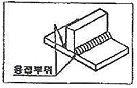
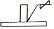
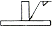
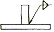
(정답률: 33%)
31. 3차원 물체의 모델링(modelling) 방법으로 맞지 않은 것은?
- 와이어프레임(wrie frame) 모델링
- 서피스(surface) 모델링
- 렌더링(redering) 모델링
- 솔리드(soild) 모델링
(정답률: 75%)
32. 스프로킷 휠의 피치선을 표시하는 선의 종류는?
- 가는실선
- 가는 파선
- 가는 1점 쇄선
- 가는 2점 쇄선
(정답률: 77%)
33. 커서 제어 장치로 CRT 상에서 방출되는 빛을 검출하여 재료를 선정하는 장치는?
- Mouse
- Light-pen
- Key Board
- Digitizer
(정답률: 63%)
34. 재료 기호의 연결이 틀린 것은?
- SNC 415 : 니켈크롬강 강재
- SM45C : 기계구조용 탄소 강재
- ZDC1 : 아연 합금 다이캐스팅
- AC1A : 알루미늄 합금 다이캐스팅
(정답률: 44%)
35. 다음 기계재료 기호 중 회주철품을 나타내는 것은?
- GC
- SC
- GCD
- WMC
(정답률: 65%)
36. 투상도의 표시 방법에서 보조 투상도에 관한 설명으로 적합한 것은?
- 복잡한 물체를 절단하여 투상한 것
- 물체의 홈, 구멍 등 특정 부위만 도시한 투상도
- 특정 부분의 도형이 작아서 그 부분만을 확대하여 그린 투상도
- 경사면부가 있는 물체의 경사면과 마주보는 위치에 그린 투상도
(정답률: 58%)
37. 다음 나사 기호 중 관용 테이퍼 암나사 기호는?
- G
- R
- Rc
- Rp
(정답률: 58%)
38. 다음 도면에서 치수 보조선으로 맞는 것은?
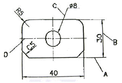
- A
- B
- C
- D
(정답률: 70%)
39. 평벨트 풀리의 도시법에 대한 설명 중 옳지 않은 것은?
- 벨트 풀리는 축방향의 투상을 정면도로 한다.
- 모양이 대칭형인 벨트 풀리는 그 일부분만을 도시한다.
- 암은 길이 방향으로 절단하여 단면의 도시를 하지 않는다.
- 암의 단면형은 도형의 안이나 밖에 회전단면을 도시한다.
(정답률: 37%)
40. 리벳의 도시법으로 옳은 것은?
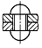
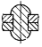
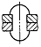
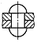
(정답률: 49%)
41. 등각 투상도에 대한 설명으로 틀린 것은?
- 등각 투상도는 정면도와 평면도, 측면도가 필요하다.
- 정면, 평면, 측면을 하나의 투상도에서 동시에 볼 수 있다.
- 직육면체에서 직각으로 만나는 3개의 모서리는 120°를 이룬다.
- 한 축이 수직일 때에는 나머지 두 축은 수평선과 30°를 이룬다.
(정답률: 31%)
42. 배관도의 치수기입 방법에 대한 설명 중 틀린 것은?
- 파이프나 밸브 등의 호칭 지름은 파이프라인 밖으로 지시선을 끌어내어 표시한다.
- 치수는 파이프, 파이프 이음, 밸브의 목 입구의 중심에서 중심까지의 길이로 표시한다.
- 여러 가지 크기의 많은 파이프가 근접해서 설치된 장치에서는 단선도시 방법으로 그린다.
- 파이프의 끝부분에 나사가 없거나 왼나사를 필요로 할 때에는 지시선으로 나타내어 표시한다.
(정답률: 51%)
43. 맞물림 클러치의 모양 중 그림과 같은 이(Jaw)는 무슨형에 해당하는가?
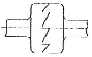
- 직사각형
- 사다리꼴형
- 삼각형
- 덩굴형
(정답률: 37%)
44. 제거 가공해서는 안 된다는 것을 지시할 때 사용하는 표면거칠기의 기호로 맞는 것은?
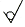
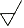
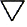
(정답률: 79%)
45. 다음 그림은 표면거칠기의 지시이다. 면의 지시기호에 대한 지시사항에서 D를 바르게 설명한 것은?
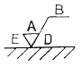
- 표면 파상도
- 줄무늬 방향의 기호
- 다듬질 여유 기입
- 중심선 평균 거칠기의 값
(정답률: 70%)
46. 다음 보기의 정면도에 해당하는 것은?
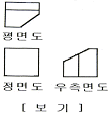
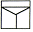
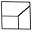
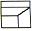
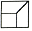
(정답률: 40%)
47. 다음 도면에서 전체 길이 A는 얼마인가?
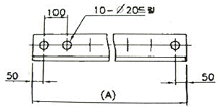
- 700㎜
- 800㎜
- 900㎜
- 1000㎜
(정답률: 65%)
48. 다음 중 한 도면에서 두 종류의 선이 같은 장소에서 겹치게 될 때에 가장 우선 되는 선은?
- 해칭선
- 치수선
- 숨은선
- 외형선
(정답률: 83%)
49. 일반적으로 CAD작업에서 사용되는 좌표계와 거리가 먼 것은?
- 상대좌표
- 절대좌표
- 극좌표
- 원점좌표
(정답률: 64%)
50. IT 기본 공차는 모두 몇 등급인가?
- 17등급
- 18등급
- 19등급
- 20등급
(정답률: 82%)
51. 코일 스프링의 요목표에 기입할 사항으로 적당하지 않은 것은?
- 스프링의 종류
- 재료의 지름(㎜)
- 총 감김 수
- 자유 높이(㎜)
(정답률: 23%)
52. 기어의 제도에서 축방향에서 본 이뿌리원을 그리는 선의 종류는?
- 가는 파선
- 가는 실선
- 가는 1점 쇄선
- 굵은 실선
(정답률: 58%)
53. 아래의 치수기입 중 가장 헐거운 끼워맞춤은?
- ø50H7/t6
- ø50H6/p6
- ø50H6/m5
- ø50H7/g6
(정답률: 70%)
54. 볼 베어링의 KS 호칭번호가 6026 P6일 때 P6가 나타내는 것은?
- 베어링 계열기호
- 안지름 번호
- 등급기호
- 형상번호
(정답률: 65%)
55. 키의 호칭방법에 포함되지 않는 것은?
- 종류 및 호칭치수
- 길이
- 인장강도
- 재료
(정답률: 63%)
56. 도면에서 아래 표시에 맞는 설명은?
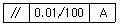
- 평면도가 평면A에 대하여 지정길이 0.01㎜에 대하여 100mm의 허용 값을 가지는 것을 말한다.
- 평면도가 직선A에 대하여 지정길이 100mm에 대하여 0.01mm의 허용 값을 가지는 것을 말한다.
- 평행도가 기준A에 대하여 지정길이 0.01mm에 대한 100mm의 허용 값을 가지는 것을 말한다.
- 평행도가 기준A에 대하여 지정길이 100mm에 대한 0.01mm의 허용 값을 가지는 것을 말한다.
(정답률: 68%)
57. 볼트에서 골 지름은 어떤 선으로 긋는가?
- 굵은 실선
- 가는 실선
- 숨은선
- 가는 2점쇄선
(정답률: 60%)
58. 다음 중 나사의 도시법 중 옳지 않은 사항은?
- 암나사의 안지름은 굵은 실선으로 그린다.
- 완전 나사부와 불완전 나사부의 경계선은 굵은 실선으로 그린다.
- 수나사의 바깥지름은 굵은 실선으로 그린다.
- 수나사와 암나사의 측면도시에서 골지름은 굵은 실선으로 그린다.
(정답률: 57%)
59. 50H7 구멍과 50g6 축의 끼워맞춤 기입법으로 틀린 것은?
- 50H7/g6
- 50H7-g6
- 50H7+g6
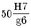
(정답률: 57%)
60. 다음 그림과 같이 정면도와 우측면도가 주어졌을 때 평면도로 알맞은 것은?
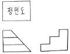
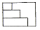
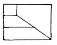
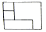
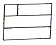
(정답률: 63%)